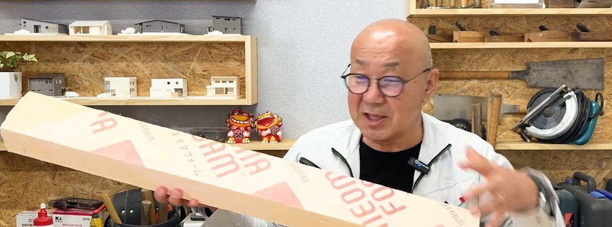
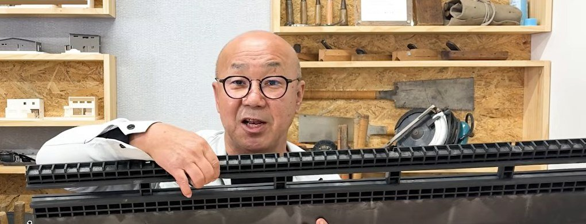
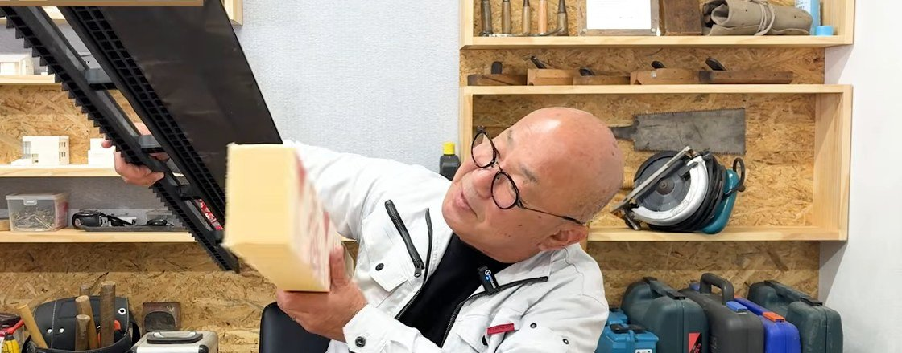

足元から暖かく、洗面所もトイレも寒くない。
床下エアコンは、新築でご希望の多い暖房です。
その一方で「カビが出た」「シロアリが心配」という声も聞きます。
大工歴43年の社長に、どちらが本当なのかを聞きました。
答えは「やるべきことをやれば、ちゃんと暖かくなる」。
そのやるべきことが、6つあります。
床下エアコンとは、床の下を暖める暖房
エアコンを床の下に向けて据え付け、暖かい風を基礎の中へ吹き出します。
基礎の中にたまった暖かさが、床を下から温めます。
床の吹き出し口から、部屋にも暖かい空気が上がってきます。
- 体に風が当たらない
床から温まるので、頭がのぼせにくい暖房です - 家の中の温度差が小さい
吹き出し口を洗面所・トイレ・玄関にも付けられます - 床暖房より費用を抑えやすい
電気式や温水式の床暖房と比べて、つける費用が安く済みます
利点の多い暖房です。
ただし、エアコンを床下に置けば終わり、ではありません。
1. 結露水を、外まで流す
エアコンは、運転すると水が出ます。
その水を外へ流す管には、下り勾配が要ります。
床下エアコンは、ふつうのエアコンより低い位置に付きます。
そのぶん、勾配を取るのが難しくなります。
管に水がたまると、エアコンの故障や水漏れにつながります。
どこから外へ出すかは、設計の段階で決めておくことです。
2. 基礎の中に、風の通り道をつくる
基礎の中は、柱を支えるコンクリートの立ち上がりで仕切られています。
上から見ると、迷路のようなかたちです。
この迷路の中を、暖かい風がトイレやキッチンの奥まで届く必要があります。
そこで、人がくぐれる「人通口」を一直線に並べて、風の道をつくります。
これを考えずに設計すると、エアコンのまわりだけが暖かい家になります。
耐震のために立ち上がりが増えて、風が通りにくい家もあります。
その場合は、床下エアコンを2台にすることも考えます。
3. 温度は、部屋の側で測る
ふつうのエアコンは、本体の中で部屋の温度を測っています。
この機種を床下に置くと、床下だけが暖まった時点で止まってしまいます。
床下エアコンには、本体から離れた場所で温度を測れる、
有線のリモコンが付く機種を選びます。
ここを間違えると、床はいつまでも暖まりません。
4. 断熱と気密が、足りているか
社長がいちばん大事だと話したのが、ここです。
断熱が弱い家では、床の熱がすぐ外へ逃げます。
暖かい空気は上へ昇り、窓で冷やされた空気が足元へ落ちてきます。
社長の目安は、断熱等級5以上。
すき間の少なさを表すC値は、0.5〜0.6までは欲しいと話しています。
すき間が多いと、どれだけ大きなエアコンを入れても電気代がかかるだけです。
シバサンホームの標準は、断熱等級6・C値0.2です。
 シバサンホームの性能断熱等級6とC値0.2を、
シバサンホームの性能断熱等級6とC値0.2を、数字と写真で見られます。
5. シロアリを、上へ登らせない
夏の冷房は、床下に入れない
シロアリが好むのは、暗くて湿った場所です。
新しい基礎のコンクリートは、水分が抜けるまでに1〜2年かかります。
そこへ夏に冷房の風を入れると、基礎の中で結露が起きます。
床下エアコンは、冬の暖房だけに使うのが基本です。
夏は、吹き抜けの上などに付けたエアコンで冷やします。
冷たい空気は上から下へ降りていくので、そのほうが家全体が冷えます。
断熱材は、基礎の内側に貼る
床下エアコンの家は、基礎のコンクリートに断熱材を貼ります。
外側に貼るか、内側に貼るかで、シロアリへの強さが変わります。

これを基礎の内側に貼っていきます。
外側に貼ると、断熱材が土に触れます。
土の中にいるシロアリにとっては、そのまま上へ登れる道になります。
社長の答えは、内側に貼るほうが安全でした。
基礎と土台の間に「返し」をつける
それでも、シロアリが断熱材の中に入ってくることはあります。
そこで、基礎と土台の間に返しの付いた部材をはさみます。

上から押さえると、すき間がふさがる形です。
シロアリは、逆さまに歩くことができないそうです。
断熱材の上に数センチの返しがかぶさっていれば、そこで止まります。

この形で、シロアリを土台まで登らせません。
基礎の底一面がコンクリートの「ベタ基礎」でも、
それだけで大丈夫とは言えません。
見えない場所ですが、ここがいちばん家を守ります。
6. 施工した経験を、会社に聞く
排水、風の道、機種、断熱と気密、シロアリ対策。
床下エアコンは、この5つがそろってはじめて効果が出ます。
「床下エアコンはできますか」と聞けば、
「できますよ」と答える会社は多いはずです。
聞くべきなのは、実際に何棟つけたことがあるかです。
あわせて、その会社の家のC値の実測値も聞いてみてください。
よくある質問
床下エアコンで、カビやシロアリが出るのは本当ですか？
夏に床下へ冷房の風を入れると、基礎の中で結露が起き、カビやシロアリが好む湿った環境になります。床下エアコンは冬の暖房だけに使い、断熱材は基礎の内側に貼り、返しの付いた基礎パッキンでシロアリを土台まで登らせないことが大切です。
床下エアコンで、夏の冷房もできますか？
おすすめしません。冷たい空気は下にたまるので床下から冷やしても部屋は涼しくならず、基礎の中で結露が起きる原因になります。夏は吹き抜けの上などに付けたエアコンで冷やすと、冷たい空気が上から降りて家全体が冷えます。
どのくらいの断熱性能があれば、床下エアコンは効きますか？
動画の中で大工社長は、断熱等級5以上、すき間の少なさを表すC値は0.5〜0.6までを目安に挙げています。すき間が多い家では、暖かい空気が逃げて床下エアコンの効きが落ち、電気代がかかるだけになります。
床下エアコンには、どんなエアコンを選べばいいですか？
本体から離れた場所で部屋の温度を測れる、有線リモコンが付く機種を選びます。本体の中で温度を測る機種だと、床下だけが暖まった時点で運転が止まり、部屋が暖まりません。
まとめ
- 床下エアコンは、足元から家中を暖められる暖房
- 排水の勾配と風の通り道は、設計の段階で決める
- 温度を部屋の側で測る、有線リモコンの機種を選ぶ
- 断熱等級5以上、C値0.6以下が効かせる目安
- 夏の冷房は床下に入れない。断熱材は内側、返しでシロアリを止める
- 施工の実績と、C値の実測値を会社に聞く

奈良の工務店シバサンホームで、初めての家づくりに伴走しています。お金のことこそ正直に。モットーはスピード・誠実さ・楽しさ。